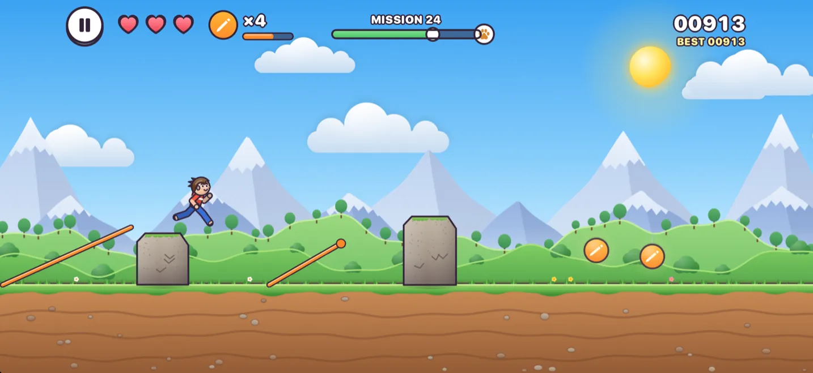
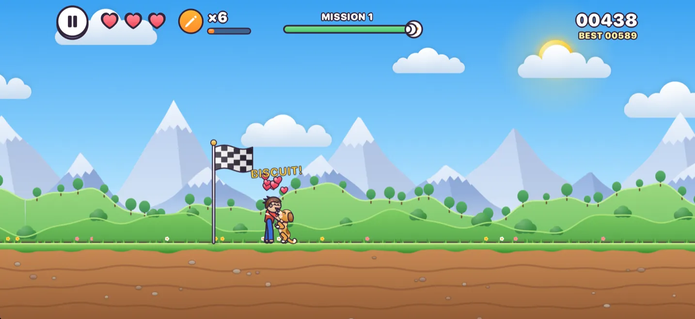
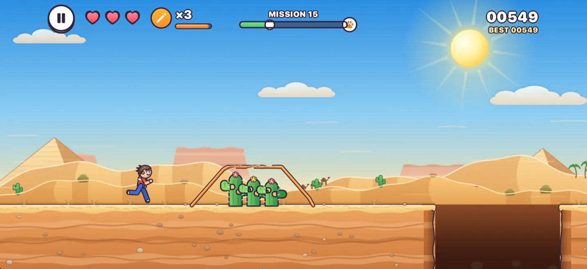
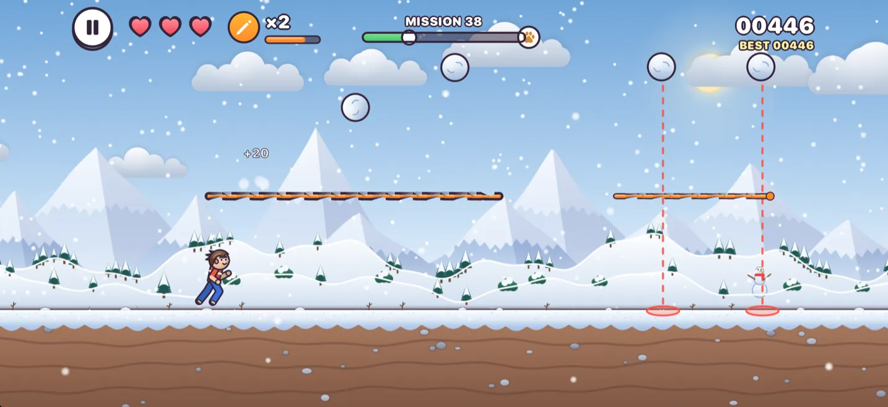
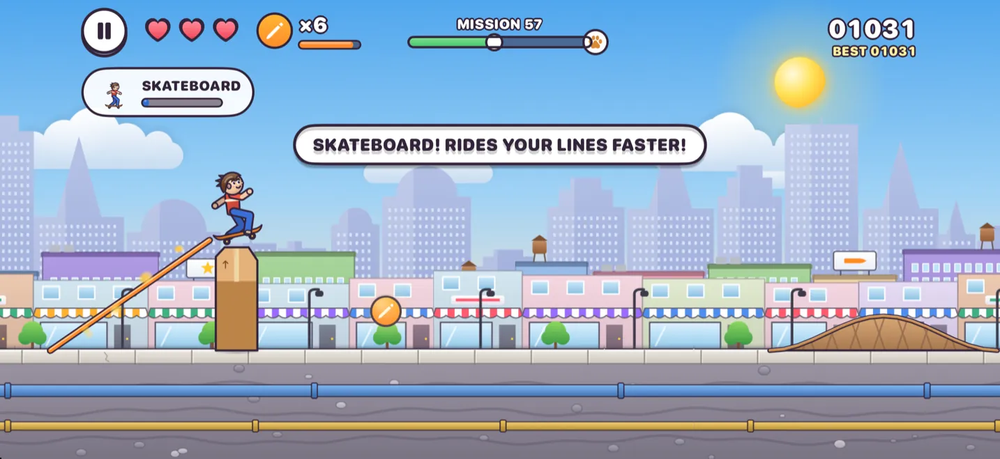

Primavera
Colinas verdes, charcas, rocas y árboles, y piedras que caen del cielo.
Juegos para iPhone y iPad · supportwordduel@gmail.com
Dibuja líneas. Llega a tu perrito.
Tu corredor nunca salta y solo quiere una cosa: volver con su perrito. El lápiz lo tienes tú. Dibuja puentes sobre los agujeros, rampas por encima de las rocas, escudos contra las piedras que caen y muros que detienen a los coches.
Borij significa «¡corre!» en mazandaraní.
Las líneas solo sostienen a tu corredor desde arriba. Por los lados las atraviesa, así que un muro detiene un taxi, pero nunca a tu corredor.
Dibuja un puente de borde a borde.
Empieza en el suelo y dibuja una rampa que suba y pase por encima.
Pasa por encima. Si tu línea los supera, estás a salvo.
Dibuja un escudo sobre la cabeza de tu corredor.
Dibuja un muro. Ellos rebotan; tu corredor pasa a través.
El tiempo va más lento mientras tu dedo está en la pantalla. Cada línea gasta tinta: recoge los lápices por el camino, y cuanto más lejos corras, más ganarás.

Al final de cada misión te espera tu perrito. El reencuentro es lo mejor: una carrera, un salto, un gran abrazo.
Ponle nombre. Biscuit es solo el principio.
Elige su pelaje. Hay ocho, del dorado al dálmata y al medianoche.
Vístelo. Collares, pañuelos, pajarita, cascabel, y gorros desde un lazo hasta una corona.
Persíguelo. En el Maratón tu perrito se adelanta cada 300 m y salta todo lo que encuentra.
Doce capítulos, cada uno con un sprint corto y una larga carrera de jefe, y tres estrellas que ganar en cada misión.

Colinas verdes, charcas, rocas y árboles, y piedras que caen del cielo.

Dunas del Sáhara, pirámides, cactus y largos huecos ardientes que cruzar.

Muñecos de nieve, pinchos de hielo y bolas de nieve que bajan rodando por la montaña.

Taxis, palomas, conos, contenedores y macetas que caen de los balcones.
Cada carrera da premios para el vestuario, y siempre hay un motivo para volver mañana.
Una vida y ninguna meta. Los imanes atraen los lápices, los escudos aguantan un golpe por ti y tu perrito siempre va un paso por delante.
Un recorrido nuevo cada día, igual para todos, con su propia clasificación de Game Center.
Tres retos al día y una racha de días seguidos, todo pagado en premios.
Nueve chicas y nueve chicos, y camisetas, vestidos, zapatos, gorros y mucho más para combinar.
De la bici al hoverboard, con tres modelos cada uno. Cada vehículo aguanta un golpe por ti.
¿Atascado en una misión? Mira todas las líneas que necesita y dibuja encima.
Cada línea cuesta ✎1. Recoge los lápices por el camino (un raro lápiz ×3 vale por tres), y cuanto más lejos corras, más tinta ganas: a los 50 m, 100 m, 200 m y más allá.
Nunca durante una carrera, y ninguno en tus 8 primeras misiones. Después, aparece un anuncio a pantalla completa cada 3 misiones terminadas y cada 2 maratones. Los demás anuncios solo se ven si tú los eliges: para seguir corriendo tras tu última vida, ver el camino, duplicar tus premios o probarte algo durante una carrera.
Una suscripción opcional, de 19,99 US$ al año o 3,99 US$ al mes en EE. UU. (los precios varían según el país): sin ningún anuncio, premios dobles y el 40 % del vestuario desbloqueado. Si solo quieres quitar los anuncios a pantalla completa, Quitar anuncios es una compra única de 4,99 US$. Las suscripciones se renuevan automáticamente hasta que las canceles en los ajustes de tu cuenta de Apple.
Las misiones, las estrellas, los premios, tu vestuario y tu perrito se guardan en tu dispositivo. Vuelven con una copia de seguridad de iCloud o del ordenador, pero si borras la app se pierden. Tus compras vuelven con Restaurar compras. No hay cuenta.
¿Quieres saber el día que sale Borij? Escríbenos y te avisaremos en cuanto esté disponible.